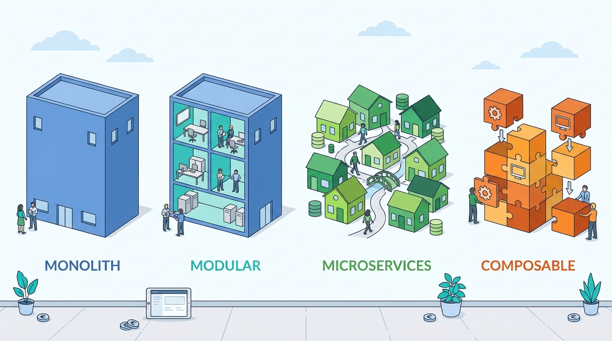

Part VII — PLATFORM: How Commerce Platforms Are Built
Monolith, Modular Monolith, Microservices, Composable: What the Evidence Says
AI-assisted: researched and written with Claude Code, images generated with the Gemini API. How this works
